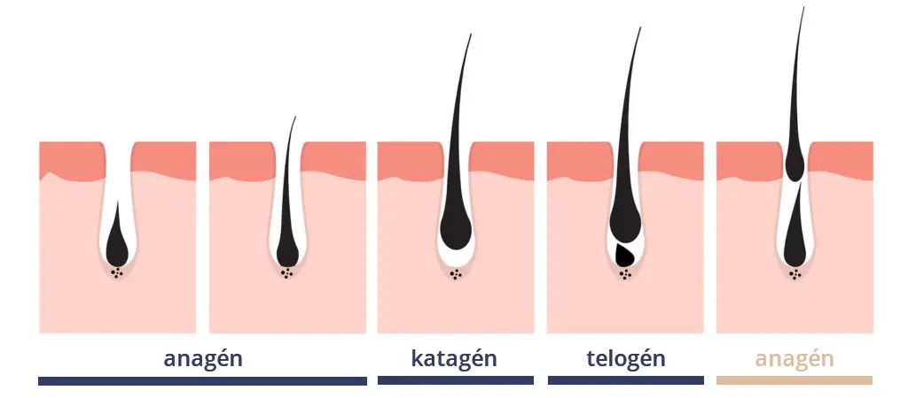

Orvosesztétika
Lézeres kezelések:
1. EunSung ClearLignt végleges lézeres szőrtelenítés:
A SZŐRTELENÍTÉS TUDOMÁNYOS HÁTTERE
A szőrnövekedés fázisai
Szőrszálaknak három növekedési fázisa van. A szőrtelenítő eljárások a növekedési fázisban levő szőrszálakat tudják kezelni. Mivel szőrzetünk egy része nem az aktív fázisban van, egy kezelés során nem tudunk minden szőrszálat elérni a kezelés során. Bár a dióda lézeres szőrtelenítés már az első 1-3 kezelés alkalmával is rengeteg szőrtüszőt elpusztít, látványos az eredmény, de a végleges eredményt körülbelül 6-8 alkalom után lehet tapasztalni, ez egyénenként természetesen változhat.

A ClearLight Dióda lézer 808 nm hosszúságú lézersugara hatékonyan célozza meg a szőrszálakban levő melanint, nyelődik el és pusztítja el a szőrtüszőket, anélkül, hogy a környező szövetek és a bőr károsodnának. A kezelőfej alkalmas a nehezen hozzáférhető testrészek kezelésére is. A kezelt területről 10-14 nap múlva kipotyognak az elhalt szőrszálak. Hogy tartósan (évekig) megőrizzük az elért szőrtelenséget, a kezeléssorozatot követően érdemes évenként egy-egy fenntartó kezelésen részt venni.

KEZELÉS ELŐTTI TEENDŐK
- Ne gyantáztasson legalább egy hónappal korábban!
- Kezelés előtt 1-2 nappal borotválja le a kívánt területet!
- Napvédelem 7-10 nappal az első kezelést megelőzően.
- Kezelés előtt 24 órával ne használjon arckrémet, illetve testápolót!


LÉZERES SZŐRTELENÍTÉS MENETE
- A lézeres szőrtelenítést egy személyes konzultáció előzi meg, átbeszéljük a kezelést, részletes felvilágosítást adunk a vendég problémájának megfelelően.
- Ezután felvesszük az adatokat, meghatározzuk a bőrtípust.
- A szemölcsöket, anyajegyeket, tetoválásokat leragasztjuk.
- Ezután maga a lézeres szőrtelenítési kezelés következeik, amely során a vendég védőszemüveget visel.
- A szőrtelenítő kezelés időtartama a kezelendő terület nagyságától függ.
- Művelet során ultrahang zselét használunk a kezelt területen.
Ha arcon végezzük a kezelést, akkor fényvédővel látjuk el a bőrt a kezelés végén.
LÉZERES KEZELÉS UTÁN
- Kiemelten fontos megfelelő fényvédő krém rendszeres használata és a kezelés utáni fontos teendők szigorú betartása.
- A kezelést követő 1-3 órában enyhe bőrpír jelentkezhet. Szükség esetén használjon bőrnyugtató-, hűsítő krémet!
- A szőrszálak körül felléphet helyi ödéma, de ez csak átmeneti hatás és hamar enyhül.
- A kezelt területen 1-2 napig kerülje a kozmetikumok és irritáló, allergizáló anyagok használatát!
- Kezelés után 1 hónapig használjon a kezelt felületen fényvédő krémet!
- Ne napozz, szoláriumozz, és ne használj bőrbarnító krémet a kezelés utáni héten!
- A kezelés utáni néhány napban a kezelt terület fokozott érzékenysége miatt kerülje a forró fürdőt, masszázst és a szauna használatát! Kerüld a mechanikai irritációt!
- Amíg a bőrpír és ödéma el nem múlik, borotvával se szőrteleníts!
- A kezelést követően, a tartós eredmény elérésének érdekében ne gyantáztass, ne alkalmazz epilátort, vegyszeres szőrtelenítést, szőkítést, és bármilyen nehéz is, csipeszes szőrtelenítéssel se próbálkozz!
- A kezelés után csekély mértékben előfordulhat pörkösödés, hámlás, hólyagosodás.
- A tüneteket hideg borogatással, hűsítő hidratáló krémmel szabad enyhíteni!
- A hámló bőrt tépkedni, vakarászni, dörzsölgetni tilos!
LÉZERES SZŐRTELENÍTÉS ELLENJAVALLATOK
- Tetoválás, illetve tetoválás-eltávolítás helyén.
- Nyílt sebek, sérülések helyén, illetve ha a kezelt területen bármilyen bőrbetegség van.
- Aktív herpesz helyén.
- Terheseknek, illetve a szoptatás ideje alatt sem javasoljuk a kezelést, tervezett terhesség előtt sem, mivel a terhesség idején megváltozik a szervezet hormonháztartása.
- Lázas állapot idején.
- Cukorbetegség, epilepszia, kemoterápia esetén.
- Magas vérnyomás illetve szívbetegség esetén.
- Aktív bőrbetegség, egyéb daganatos betegség esetén.
- Autoimmun betegség esetén.
- Keloidos, hypertrophiás (sebzés helyén kialakuló hegdaganat) vagy atrophiás (behúzódó hegek) sebgyógyulási hajlam esetén.
- Melanoma (bőrből kiinduló rosszindulatú daganat) esetén.
- Fehér, ősz szőrszálak esetén és pihés szőrzet esetén.
- Fokozott fényérzékenység, allergia illetve fényérzékenyítő gyógyszerek szedése esetén.
Kérjük, mindenképpen ellenőrizze a szedett gyógyszereket, hogy azok okoznak-e fényérzékenységet!
2. Vitakontrol lézeres hyalurosnavas feltöltés:
A ránctalanításra inkejció nélkül is van megoldás. Infravörös lágylézerrel juttatjuk be a bőr mélyebb rétegeibe a speciálisan kifejlesztett hyaluronsavat. A Vitacontrol® lasersystem egyesíti az infravörös hideglézer-terápia, valamint a sejtek belsejébe hatoló Hyaluron gél segítségével végzett kezelések előnyeit. Ezzel a technikával az egész arcra diffúzan tudunk olyan anyagot bejuttatni, mely megköti a vizet és a petyhüdt bőrt üdévé, vérbővé és feszessé képes visszaalakítani. A Vitacontrol® lézeres hyaluronsavas kezelés előnyei:
- a bőr revitalizálódik, vízmegkötő képessége nagyban javul, a ráncok kisimulnak;
- arc, nyak, dekoltázs és a kézfej fiatalítására is alkalmas;
- Fájdalommentes